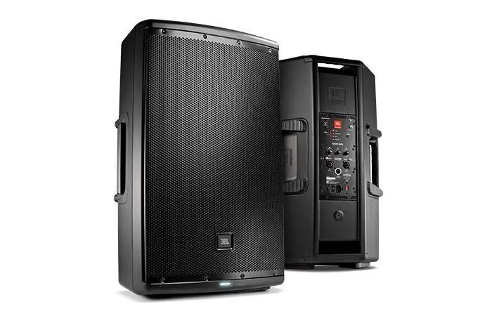

Аудиосистемы
Передовые технологии волноводов JBL в сочетании с оригинальными динамиками и корпусом, изготовленным из высокотехнологичных материалов позволяют достичь идеального звучания в любом сценарии применения. Аудиосистемы JBL при этом соответствуют концепции доступности, автономности и портативности, при этом они не уступают в мощности и производительности.